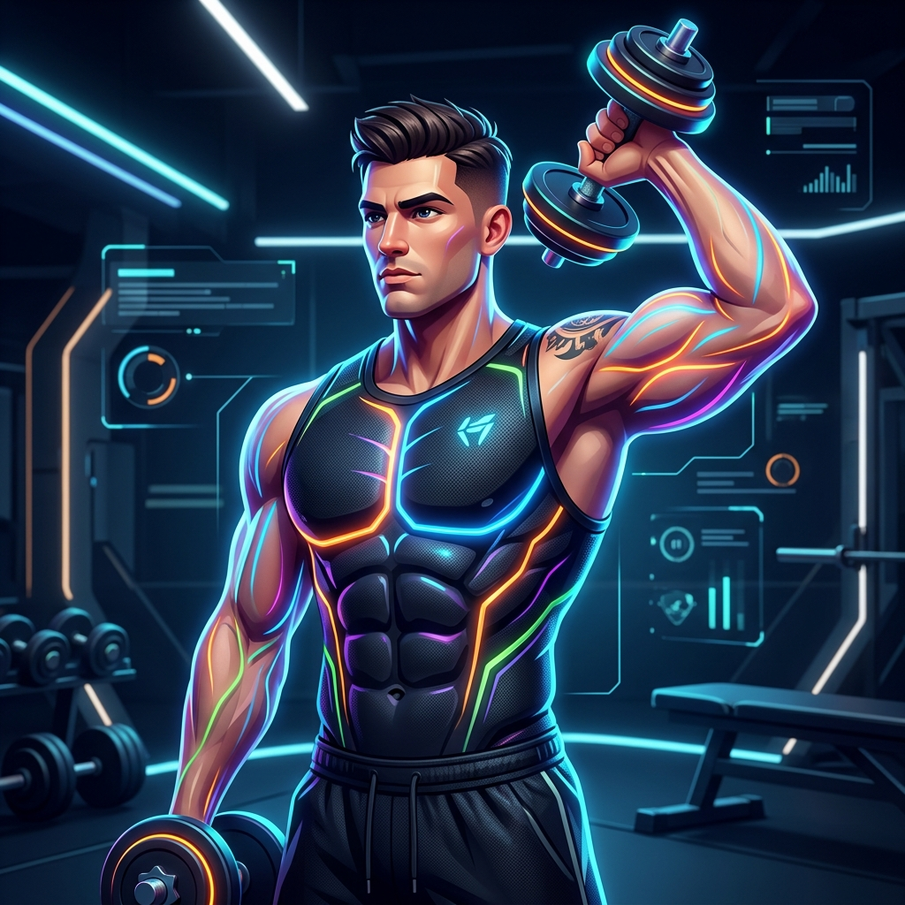

Segunda-feira
Peito • Ombro • Tríceps
Dia de empurrar pesado: priorize carga controlada nos supinos e evite falhar cedo.
-

 Supino reto máquina ou barra Peitoral médio, deltoide frontal e tríceps. Sinta o peito empurrando, sem jogar tudo nos ombros.4x 8-12
Supino reto máquina ou barra Peitoral médio, deltoide frontal e tríceps. Sinta o peito empurrando, sem jogar tudo nos ombros.4x 8-12 -

 Supino inclinado halteres Peitoral superior, ombro frontal e tríceps. Sinta a parte alta do peito alongar e contrair.3x 8-12
Supino inclinado halteres Peitoral superior, ombro frontal e tríceps. Sinta a parte alta do peito alongar e contrair.3x 8-12 -

 Crucifixo máquina Peitoral com foco em adução. Sinta o peito fechando o movimento, não os braços puxando.3x 12-15
Crucifixo máquina Peitoral com foco em adução. Sinta o peito fechando o movimento, não os braços puxando.3x 12-15 -

 Desenvolvimento máquina Deltoides, principalmente anterior e lateral, com apoio do tríceps. Sinta os ombros conduzindo a subida.3x 8-12
Desenvolvimento máquina Deltoides, principalmente anterior e lateral, com apoio do tríceps. Sinta os ombros conduzindo a subida.3x 8-12 -

 Elevação lateral Deltoide lateral. Sinta a lateral do ombro queimar, mantendo trapézio e balanço sob controle.4x 12-15
Elevação lateral Deltoide lateral. Sinta a lateral do ombro queimar, mantendo trapézio e balanço sob controle.4x 12-15 -

 Tríceps corda Tríceps, com foco na cabeça lateral e contração final. Sinta o braço estender até o fim.3x 12-15
Tríceps corda Tríceps, com foco na cabeça lateral e contração final. Sinta o braço estender até o fim.3x 12-15